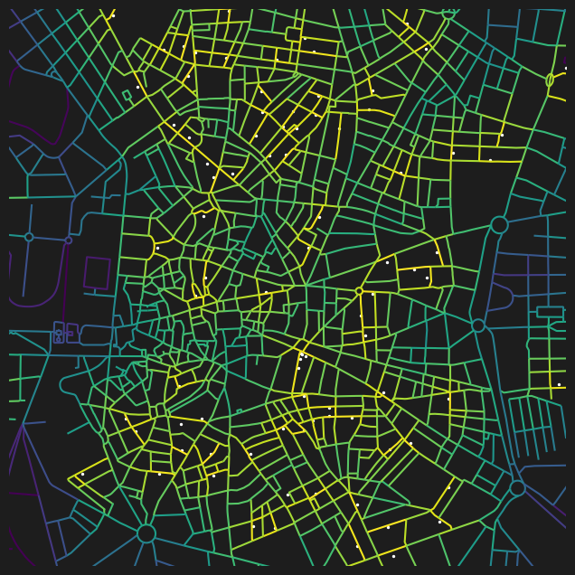

import geopandas as gpd
import matplotlib.pyplot as plt
from cityseer.metrics import layers
from cityseer.tools import graphs, ioLanduse accessibility from GeoPandas data
Calculate landuse accessibilities from a geopandas GeoDataFrame.
To start, follow the same approach as shown in the network examples to create the network.
streets_gpd = gpd.read_file("data/madrid_streets/street_network.gpkg")
streets_gpd = streets_gpd.explode(reset_index=True)
G = io.nx_from_generic_geopandas(streets_gpd)
G_dual = graphs.nx_to_dual(G)
nodes_gdf, _edges_gdf, network_structure = io.network_structure_from_nx(G_dual)INFO:cityseer.tools.graphs:Merging parallel edges within buffer of 1.
INFO:cityseer.tools.graphs:Converting graph to dual.
INFO:cityseer.tools.graphs:Preparing dual nodes
INFO:cityseer.tools.graphs:Preparing dual edges (splitting and welding geoms)
INFO:cityseer.tools.io:Preparing node and edge arrays from networkX graph.
INFO:cityseer.graph:Edge R-tree built successfully with 104026 items.Read-in the dataset from the source Geopackage or Shapefile Geopandas.
prems_gpd = gpd.read_file("data/madrid_premises/madrid_premises.gpkg")
prems_gpd.head()| index | local_id | local_distr_id | local_distr_desc | local_neighb_id | local_neighb_desc | local_neighb_code | local_census_section_id | local_census_section_desc | section_id | section_desc | division_id | division_desc | epigraph_id | epigraph_desc | easting | northing | geometry | |
|---|---|---|---|---|---|---|---|---|---|---|---|---|---|---|---|---|---|---|
| 0 | 0 | 10003324 | 1 | CENTRO | 105 | UNIVERSIDAD | 5 | 1091 | 91 | I | hospitality | 56 | food_bev | 561001 | RESTAURANTE | 440181.6 | 4475586.5 | POINT (440181.6 4475586.5) |
| 1 | 1 | 10003330 | 1 | CENTRO | 105 | UNIVERSIDAD | 5 | 1115 | 115 | R | art_rec_entert | 90 | creat_entert | 900003 | TEATRO Y ACTIVIDADES ESCENICAS REALIZADAS EN D... | 440000.6 | 4474761.5 | POINT (440000.6 4474761.5) |
| 2 | 2 | 10003356 | 1 | CENTRO | 104 | JUSTICIA | 4 | 1074 | 74 | I | hospitality | 56 | food_bev | 561004 | BAR RESTAURANTE | 440618.6 | 4474692.5 | POINT (440618.6 4474692.5) |
| 3 | 3 | 10003364 | 1 | CENTRO | 104 | JUSTICIA | 4 | 1075 | 75 | G | wholesale_retail_motor | 47 | retail | 472401 | COMERCIO AL POR MENOR DE PAN Y PRODUCTOS DE PA... | 440666.6 | 4474909.5 | POINT (440666.6 4474909.5) |
| 4 | 4 | 10003367 | 1 | CENTRO | 106 | SOL | 6 | 1119 | 119 | G | wholesale_retail_motor | 47 | retail | 477701 | COMERCIO AL POR MENOR DE JOYAS, RELOJERIA Y BI... | 440378.6 | 4474380.5 | POINT (440378.6 4474380.5) |
Identify or prepare any columns and land uses of interest, for which you want to compute accessibilities.
prems_gpd.division_desc.unique()array(['food_bev', 'creat_entert', 'retail', 'services', 'education',
'accommod', 'Real Estate Activities',
'Residential Care Activities',
'Social Services Without Accommodation',
'Graphic Arts and Reproduction of Recorded Media',
'Sale and Repair of Motor Vehicles and Motorcycles',
'Decontamination and Other Waste Management Services',
'Gambling and Betting Activities', 'sports_rec', 'health',
'Wholesale Trade and Middlemen, Except for Motor Vehicles and Motorcycles',
'Telecommunications',
'Financial Services, Except Insurance and Pension Funds',
'Associative Activities', 'Veterinary Activities',
'Auxiliary Services to Financial Services and Insurance',
'Insurance, Reinsurance, and Pension Funds, Except Compulsory Social Security',
'Rental Activities',
'Office Administrative and Other Business Support Activities',
'Technical Services of Architecture and Engineering; Technical Testing and Analysis',
'Other Manufacturing Industries',
'Storage and Activities Related to Transport',
'Specialized Construction Activities and Building Finishing',
'Clothing Manufacturing',
'Activities of Travel Agencies, Tour Operators, Reservation Services, and Related Activities',
'Land Transport and Pipeline Transport',
'Other Professional, Scientific, and Technical Activities',
'Computer Repair, Personal Effects, and Household Items',
'Publishing (Includes Software)', 'Postal and Courier Activities',
'Food Industry', 'Advertising and Market Research',
'Public Administration and Defense; Compulsory Social Security',
'Film, Video, and TV Program Activities, Sound Recording, and Music Publishing, Sound Recording and Music Publishing',
'Legal and Accounting Activities',
'Building Promotion and Construction',
'Supply of Electricity, Gas, Steam, and Air Conditioning',
'Activities of Libraries, Archives, Museums, and Other Cultural Activities',
'Paper Industry',
'Manufacturing of Computer, Electronic, and Optical Products',
'Security and Investigation Activities',
'Leather and Footwear Industry',
'Repair and Installation of Machinery and Equipment',
'Manufacturing of Metal Products, Except Machinery and Equipment',
'Furniture Manufacturing',
'Building Services and Gardening Activities', 'Chemical Industry',
'Programming, Consultancy, and Other Computer-Related Activities',
'Manufacturing of Other Non-Metallic Mineral Products',
'Textile Industry', 'Research and Development',
'Activities of Head Offices; Management Consultancy Activities',
'Pharmaceutical Product Manufacturing',
'Manufacturing of Machinery and Equipment N.E.C.',
'Manufacturing of Motor Vehicles, Trailers, and Semi-Trailers',
'Information Services',
'Manufacturing of Rubber and Plastic Products',
'Manufacturing of Electrical Equipment',
'Manufacturing of Other Transport Equipment', 'Civil Engineering',
'Wood and Cork Industry, Except Furniture; Basketry and Basketwork',
'Waste Collection, Treatment, and Disposal; Materials Recovery',
'Activities of Extraterritorial Organizations and Bodies',
'Air Transport', 'Employment Activities',
'Agriculture, Livestock, Hunting, and Related Service Activities',
'Metallurgy; Manufacturing of Iron, Steel, and Ferro-Alloy Products',
'Broadcasting and Television Programming and Broadcasting Activities',
'Wastewater Collection and Treatment', 'Beverage Manufacturing',
'Water Collection, Treatment, and Supply',
'Support Activities for Extractive Industries',
'Other Extractive Industries', 'Forestry and Logging',
'Tobacco Industry'], dtype=object)Once the land use and network data has been prepared, use the layers.compute_accessibilities method to compute accessibilities to land uses. The landuse_column_label and the target accessibility keys should correspond to the data in the input GeoDataFrame.
# compute accessibility
distances = [100, 200, 400, 800]
nodes_gdf, prems_gpd = layers.compute_accessibilities(
prems_gpd,
landuse_column_label="division_desc",
accessibility_keys=["food_bev", "creat_entert", "retail"],
nodes_gdf=nodes_gdf,
network_structure=network_structure,
distances=distances,
)INFO:cityseer.metrics.layers:Computing land-use accessibility for: food_bev, creat_entert, retail
INFO:cityseer.metrics.layers:Assigning data to network.
INFO:cityseer.data:Assigning 117358 data entries to network nodes (max_dist: 100).
INFO:cityseer.data:Collected 198773 potential node assignments from data entries.
INFO:cityseer.data:Finished assigning data. 198773 assignments added to 24576 nodes.
INFO:cityseer.graph:Barriers unset and R-tree cleared.
INFO:cityseer.config:Metrics computed for:
INFO:cityseer.config:Distance: 100m, Beta: 0.04, Walking Time: 1.25 minutes.
INFO:cityseer.config:Distance: 200m, Beta: 0.02, Walking Time: 2.5 minutes.
INFO:cityseer.config:Distance: 400m, Beta: 0.01, Walking Time: 5.0 minutes.
INFO:cityseer.config:Distance: 800m, Beta: 0.005, Walking Time: 10.0 minutes.The output columns are named cc_{key}_{distance}_{type}. Where the keys will correspond to the input accessibility keys and the distances will correspond to the input distances. The types will correspond to either non-weighted nw or distance weighted wt count, or else the distance to the nearest instance of a given landuse.
Standard GeoPandas functionality can be used to explore, visualise, or save the results.
nodes_gdf.columnsIndex(['ns_node_idx', 'x', 'y', 'live', 'weight', 'primal_edge',
'primal_edge_node_a', 'primal_edge_node_b', 'primal_edge_idx',
'dual_node', 'cc_food_bev_100_nw', 'cc_food_bev_100_wt',
'cc_food_bev_200_nw', 'cc_food_bev_200_wt', 'cc_food_bev_400_nw',
'cc_food_bev_400_wt', 'cc_food_bev_800_nw', 'cc_food_bev_800_wt',
'cc_food_bev_nearest_max_800', 'cc_creat_entert_100_nw',
'cc_creat_entert_100_wt', 'cc_creat_entert_200_nw',
'cc_creat_entert_200_wt', 'cc_creat_entert_400_nw',
'cc_creat_entert_400_wt', 'cc_creat_entert_800_nw',
'cc_creat_entert_800_wt', 'cc_creat_entert_nearest_max_800',
'cc_retail_100_nw', 'cc_retail_100_wt', 'cc_retail_200_nw',
'cc_retail_200_wt', 'cc_retail_400_nw', 'cc_retail_400_wt',
'cc_retail_800_nw', 'cc_retail_800_wt', 'cc_retail_nearest_max_800'],
dtype='object')fig, ax = plt.subplots(1, 1, figsize=(8, 8), facecolor="#1d1d1d")
nodes_gdf.plot(
column="cc_retail_400_wt",
cmap="inferno",
legend=False,
ax=ax,
)
prems_gpd[prems_gpd["division_desc"] == "retail"].plot(
markersize=1,
edgecolor=None,
color="white",
legend=False,
ax=ax,
)
ax.set_xlim(439000, 439000 + 2500)
ax.set_ylim(4473000, 4473000 + 2500)
ax.axis(False)(np.float64(439000.0),
np.float64(441500.0),
np.float64(4473000.0),
np.float64(4475500.0))fig, ax = plt.subplots(1, 1, figsize=(8, 8), facecolor="#1d1d1d")
nodes_gdf.plot(
column="cc_food_bev_200_wt",
cmap="magma",
legend=False,
ax=ax,
)
prems_gpd[prems_gpd["division_desc"] == "food_bev"].plot(
markersize=1,
edgecolor=None,
color="white",
legend=False,
ax=ax,
)
ax.set_xlim(439000, 439000 + 2500)
ax.set_ylim(4473000, 4473000 + 2500)
ax.axis(False)(np.float64(439000.0),
np.float64(441500.0),
np.float64(4473000.0),
np.float64(4475500.0))
nodes_gdf["cc_creat_entert_nearest_max_800"].fillna(800, inplace=True)
fig, ax = plt.subplots(1, 1, figsize=(8, 8), facecolor="#1d1d1d")
nodes_gdf.plot(
column="cc_creat_entert_nearest_max_800",
cmap="viridis_r",
legend=False,
ax=ax,
)
prems_gpd[prems_gpd["division_desc"] == "creat_entert"].plot(
markersize=2,
edgecolor=None,
color="white",
legend=False,
ax=ax,
)
ax.set_xlim(439000, 439000 + 2500)
ax.set_ylim(4473000, 4473000 + 2500)
ax.axis(False)/var/folders/9_/5x31j5x55819zxycf85n4cp40000gq/T/ipykernel_40677/3453596325.py:1: FutureWarning: A value is trying to be set on a copy of a DataFrame or Series through chained assignment using an inplace method.
The behavior will change in pandas 3.0. This inplace method will never work because the intermediate object on which we are setting values always behaves as a copy.
For example, when doing 'df[col].method(value, inplace=True)', try using 'df.method({col: value}, inplace=True)' or df[col] = df[col].method(value) instead, to perform the operation inplace on the original object.
nodes_gdf["cc_creat_entert_nearest_max_800"].fillna(800, inplace=True)(np.float64(439000.0),
np.float64(441500.0),
np.float64(4473000.0),
np.float64(4475500.0))